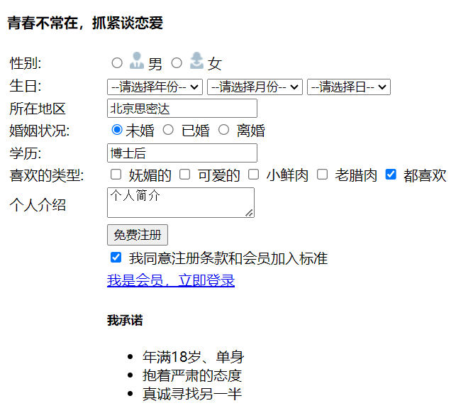

HTML5 学习笔记
HTML：超文本传输语言（与浏览器搭配）
HTML标签：默认格式样式，是网页的骨架，可以通过CSS等手段美化
HTML部分只需要了解有哪些标签，如何使用，HTML5新增了哪些标签即可。对应材料的day1~day2
1.常用标签
# 文档类型声明标签
<!DOCTYPE>
文档类型声明，告诉浏览器使用哪种HTML版本来显示网页
<!DOCTYPE html> -- 当前页面采取的是HTML5版本来显示网页
#
<html lang= "en"> -- 告诉浏览器或搜索引擎这是一个英文网站，采取英文来显示
<meta charset="UTF-8"> -- 浏览器编码方式，还有GB2312、GBK等等
# 文字、排版标签
<h1>标题，有1~6级<h1>
<p>段落标签，段间有间隙，独占一行</p>
<br>换行标签
<hr>水平线标签
<title>标签页标题</title>
<div>块级标签，独占一行</div>
<span>内联标签，不占一整行</span>
2.文本格式化标签
| 标签 | 说明 | 标签 | 说明 |
|---|---|---|---|
| b | 加粗 | strong | 加粗 |
| u | 下划线 | ins | 下划线 |
| i | 倾斜 | em | 倾斜 |
| s | 删除线 | del | 删除线 |
| 属性（img标签） | 说明 |
|---|---|
| src | 图片路径（必须） |
| alt | 替换文本。图片不显示时 显示的文字 |
| title | 提示文本。鼠标覆盖 显示的文字 |
| width | 图像宽度，可用px、% |
| height | 图像高度，可用px、% |
| border | 设置图像边框粗细 |
3.图片标签<img>
<img src="图片地址" />
<img style="height:100px; width:10%;" src="/static/tp.png" />
-- alt
### 相对路径
<img src="baidu.gif" />
<img src="images/baidu.gif" />
<img src="../baidu.gif" />
### 绝对路径
<img src="C:\Users\apple\Desktop\文件夹1\img.jpg" />
<img scr="某个网站的图片的链接地址" />
4.超链接标签<a>
外部链接：<a href="http://www.baidu.com/">超链接,点击跳转百度搜索</a> --超链接标签
内部链接：<a href="index.html" target="目标窗口的弹出方式">点击跳转到index.html</a>
-- _self本窗口打开，_blank新窗口打开......
空链接：<a href="#">首页</a>
下载链接：地址链接是一个可下载文件
网页元素链接：网页中的各种网页元素都可以添加超链接，例如文本、图像、表格、音频
<a href="http://www.baidu.com" target="_blank"><img src="img.jpg" style=""/></a>
锚点链接：点击链接可以快速定位到本页面中的某个位置（可以在博客页面中使用）
<a href="#two">第二集</a>
<h3 id="two">第二集介绍</h3>
5.表格标签<table>
案例：细线表格今日小说排行榜（对应材料的day5-12）
<!-- table定义表格，thead表头区域和tbody表主体区域，
tr定义表格中的行，th定义一行中的表头，td定义一行中的单元格 -->
<!-- VSCode中快速向下复制当前行：shift + alt + ↓ -->
<table align="center" width="500" height="249" border="1" cellspacing="0">
<thead>
<tr>
<td>排名</td>
<td>关键词</td>
<td>趋势</td>
<td>今日搜索</td>
<td>最近七日</td>
<td>相关链接</td>
</tr>
</thead>
<tbody>
<tr>
<td>1</td>
<td>鬼吹灯</td>
<td><img src="down.jpg" alt="↓"></td>
<td>345</td>
<td>123</td>
<td>
<a href="#">贴吧</a> <a href="#">图片</a> <a href="#">百科</a>
</td>
</tr>
<tr>
<td>2</td>
<td>盗墓笔记</td>
<td><img src="up.jpg" alt="↑"></td>
<td>124</td>
<td>532</td>
<td>
<a href="#">贴吧</a> <a href="#">图片</a> <a href="#">百科</a>
</td>
</tr>
</tbody>
</table>
实现效果如下↓
实现效果：
| 排名 | 关键词 | 趋势 | 今日搜索 | 最近七日 | 相关链接 |
|---|---|---|---|---|---|
| 1 | 鬼追灯 | [图]↓ | 345 | 123 | 贴吧 图片 百科 |
| 2 | 盗墓笔记 | [图]↑ | 124 | 532 | 贴吧 图片 百科 |
相关属性：border、aligh、cellpadding、cellspacing、width、height
合并单元格
跨行合并：rowspan="合并单元格个数" --最上侧作为目标单元格
跨列合并：colspan="合并单元格个数" --最左侧作为目标单元格
1.先确定是跨行还是跨列
2.找到目标单元格进行设置，例：<td colspan="2"></td>
3.删除多余的单元格/删除被合并单元格原本对应的代码
这里就提一下，具体使用方法可百度
6.列表标签
列表是用来布局的
<!-- 无序列表 -->
<ul>
<li>列表项</li>
<li>列表项</li>
<li>列表项</li>
</ul>
<!-- 有序列表 -->
<ol>
<li>列表项1</li>
<li>列表项2</li>
<li>列表项3</li>
</ol>
ul和ol中只能嵌套li，li中能嵌套任何元素
<!-- 自定义列表 -->
<dl>
<dt>名词1</dt>
<dd>名词1解释1</dd>
<dd>名词2解释2</dd>
</dl>
list-style: none; /* 去掉li前面的项目符号（小圆点） */
7.表单标签<form>
表单可以搜集用户输入的信息
表单 = 表单域 + 表单控件（表单元素）+ 提示信息
表单域：包含表单元素的区域，<form>会把它范围内的表单元素信息提交给服务器
<form action="url地址" method="提交方式" name="表单域名称">
各种表单元素控件
</form>
<!--
action：用于指定接受并处理表单数据的服务器程序的url地址
method：表单数据提交方式，get或post
name：指定表单的名称，用来区分同一个页面的多个表单域
-->
--网络请求GET/POST
浏览器中的网络请求：
当在浏览器的URL中输入地址并按回车键时，浏览器会向服务器发送请求。
- GET 请求通常用于从服务器获取数据，数据会被附加在 URL 的查询字符串中。
GET /explore HTTP/1.1\r\n
Host: example.com\r\n
User-Agent: [user-agent]\r\n
[Other headers]\r\n\r\n
- POST 请求通常用于向服务器发送数据，数据包含在请求体中，而不是 URL 中。
POST /explore HTTP/1.1\r\n
Host: example.com\r\n
User-Agent: [user-agent]\r\n
[Other headers]\r\n
Content-Length: [length]\r\n\r\n
[Request body]
浏览器向后端发送请求时：
GET 请求
方法：通过 URL 或表单提交
现象：GET 请求会将数据拼接在 URL 上，通过查询字符串的形式传递数据
https://www.baidu.com/s?ie=UTF-8&wd=安卓&name=xxx特点：
- 数据在 URL 中可见
- 通常用于请求数据，而非提交数据
- URL 有长度限制
- 适合获取数据、搜索等操作
POST 请求
方法：通过表单提交
现象：提交的数据不在 URL 中体现，而是在请求体中
https://gitee.com/login/特点：
- 数据在请求体中，不在 URL 中可见
- 通常用于提交数据，如登录、表单提交等
- 没有长度限制，可以传递大量数据
- 更加安全，因为数据不会显示在 URL 中
总结
- GET 请求：适用于请求数据，数据拼接在 URL 中，适合简单的数据请求。
- POST 请求：适用于提交数据，数据在请求体中，适合发送敏感信息和大数据量。
--input 标签
<input type="textarea" name="">
<input type="text" name="">
<input type="password" maxlength="7" name="" placeholder="请输入密码">
<input type="file" name="">
value="请输入账号" ——首次加载时会作为输入框的默认值，可以用于单选框复选框
placeholder="请输入账号" ——仅作为占位符，不是一个值。输入框聚焦或者输入了值时消失
# 单选框
<input type="radio" name="gender" value="0" checked="checked">保密 #checked即首次加载时默认被选中
<input type="radio" name="gender" value="1">男
<input type="radio" name="gender" value="2">女
# 复选框
<input type="checkbox" name="hobby" value="10">篮球
<input type="checkbox" name="hobby" value="20">足球
<input type="checkbox" name="hobby" value="30">棒球
<input type="button" value="提交"> // 普通按钮，可以将js绑定button按钮来实现某些功能
<input type="submit" value="提交"> // 提交表单按钮
<input type="reset" value="重置"> // 重置表单按钮，清除表单中的所有数据
--label标签
label标签为input元素定义标注。
用于绑定一个表单元素，当点击<label>内的文本时，浏览器自动将焦点转到对应的表单元素上，用来增加用户体验。
<!-- label的for 与 相关元素的id 要相同 -->
<label for="text"> 用户名:</label> <input type="text" id="text" >
<input type="radio" id="nan" name="sex"> <label for="nan">男</label>
<input type="radio" id="nv" name="sex"> <label for="nv">女</label>
--select下拉列表
<!-- -->
<select name="city"> // 加上mutiple属性可多选
<option value="bj">北京</option>
<option value="sh">上海</option>
<option value="sz" selected="selected">深圳</option>// 加上selected可将当前项设为默认选中项
</select>
--textarea文本域标签
用于定义多行文本输入
<textarea rows="5" cols="20">多行文本，可手动改大小</textarea>
<!-- 实际开发中不使用这两个参数，而是用CSS来改变大小 -->
HTML综合案例
day2-14 注册页面，可在材料中阅读代码
HTML5 新特性
HTML5 的新增特性主要是针对于以前的不足，增加了一些新的标签、新的表单和新的表单属性等。
这些新特性都有兼容性问题，基本是E9+以上版本的浏览器才支持，如果不考虑兼容性问题，可以大量使用
这些熟特性。
1.新增语义化标签
以前布局，我们基本用div来做。div对于搜索引擎来说，是没有语义的。HTML5新增了一些语义化标签
<header>:头部标签
<nav>:导航标签
<article>:内容标签
<section>:定义文档某个区域
<aside>:侧边栏标签
<footer>:尾部标签
注意 :
- 这种语义化标准主要是针对搜索引擎的
- 这些新标签页面中可以使用多次
- 在IE9中，需要把这些元素转换为块级元素
- 其实，我们移动端更喜欢使用这些标签
- HTML5还增加了很多其他标签，我们后面再慢慢学
2.新增视频标签
HTML5在不使用插件的情况下，也可以原生的支持视频/音频格式文件的播放，但是支持的格式是有限的
当前<video>元素支持三种视频格式：MP4、WebM、Ogg；不同浏览器支持情况不相同，但都支持MP4
<video src="文件地址" controls="controls"></video>
<video width="320" height="240" controls>
<source src="movie.mp4" type="video/mp4"></source>
<source src="movie.ogg" type="video/ogg"></source>
您的浏览器不支持 video 标签
</video>
常见属性：
| 属性 | 值 | 描述 |
|---|---|---|
| autoplay | autoplay | 视频就绪自动播放 |
| controls | controls | 向用户显示播放控件(一般不用，用 js 实现) |
| width | px | 设置播放器宽度 |
| height | px | 设置播放器高度 |
| loop | loop | 播放完是否继续播放该视频 |
| preload | auto(预先加载视频) none(不预加载视频) |
规定是否预加载视频(如果有了autoplay，就忽略该属性) |
| src | url | 视频url地址 |
| poster | imgurl | 加载等待的画面图片 |
| muted | muted | 静音播放 |
谷歌浏览器默认禁止自动播放视频，只需要添加 muted 属性即可
3.新增音频标签
HTML5在不使用插件的情况下，也可以原生的支持视频/音频格式文件的播放，但是支持的格式是有限的
当前<audio>元素支持三种视频格式：MP4、Wav、Ogg；不同浏览器支持情况不相同，但都支持MP4
<audio src="文件地址" controls="controls"></audio>
<audio controls loop>
<source src="happy.mp3" type="audio/mpeg"></source>
<source src="happy.ogg" type="audio/ogg"></source>
您的浏览器不支持 audio 标签
</audio>
常见属性：
| 属性 | 值 | 描述 |
|---|---|---|
| autoplay | autoplay | 如果出现该属性，则音频在就绪后马上播放 |
| controls | controls | 如果出现该属性，则向用户显示控件，比如播放按钮 |
| loop | loop | 如果出现该属性，则每当音频结束时重新开始播放 |
| src | url | 要播放的音频的 url |
谷歌浏览器默认禁止自动播放音频，需要 js 解决
总结：新增的多媒体标签主要包含两个
1.音频: <audio>
2.视频 : <video>
使用它们可以很方便的在页面中嵌入音频和视频，而不再去使用 flash 和其他浏览器插件
HTML5在不使用插件的情况下，也可以原生的支持视频/音频格式文件的播放，但是支持的格式是有限的
不同浏览器支持的格式不相同，但是都支持音频用mp3，视频用mp4
谷歌浏览器默认禁止自动播放视频和音频
可以给video标签添加muted属性来静音自动播放视频，音频audio需要通过js解决
对于视频标签，经常设置自动播放、循环和设置大小属性，不使用controls控件
4.新增input表单
HTML5新增的 input 类型：
type="xxx"，检查限制用户的输入必须为xxx类型- search：搜索框
- color：生成一个颜色选择表单
<!-- 我们验证的时候必须添加form表单域 -->
<form action="">
<ul>
<li>邮箱：<input type="email" /></li>
<li>网址：<input type="url" /></li>
<li>日期：<input type="date" /></li>
<li>时间：<input type="time" /></li>
<li>数量：<input type="number" /></li>
<li>手机号码：<input type="tel" /></li>
<li>搜索：<input type="search" /></li>
<li>颜色：<input type="color" /></li>
<!-- 当我们点击提交按钮就可以验证表单了 -->
<li><input type="submit" value="提交"></li>
</ul>
</form>
5.新增表单属性
| 属性 | 值 | 说明 |
|---|---|---|
| required | required | 表单拥有该属性表示其内容不能为空，必填 |
| placeholder | 提示文本 | 表单的提示信息，存在默认值将不显示 |
| autofocus | autofocus | 自动聚焦属性，页面加载完成自动聚焦到指定表单 |
| autocomplete | off / on | 默认已经打开。当用户在字段开始键入时，浏览器基于之前键入过的值，应该显示出在字段中可填写的选项 需要放在表单内，同时加上 name 属性，同时成功提交 |
| multiple | multiple | 可以多选文件提交 |
小例子：
<form action="">
<input type="search" name="" id="" required="required" placeholder="请输入搜索内容" autofocus autocomplete="off">
<input type="file" name="" id="" multiple="multiple">
<input type="submit" value="提交">
</form>